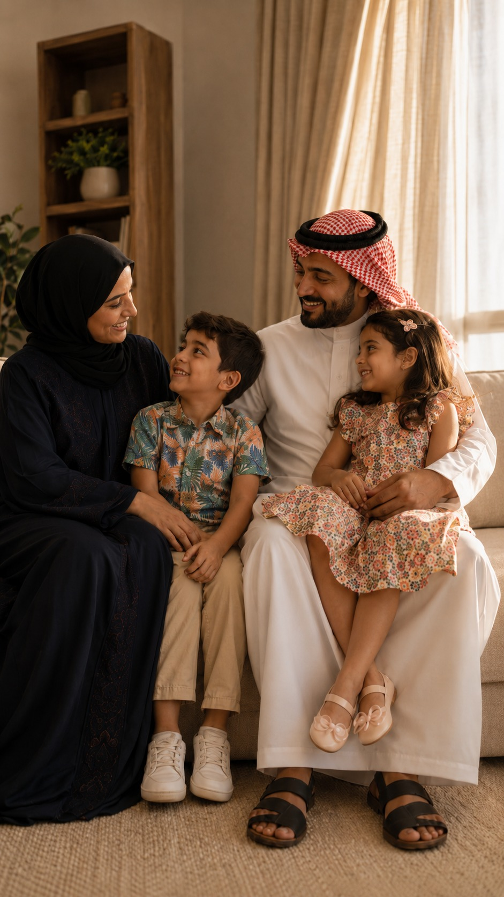

دعم الأسرة ..
جزء أساسي من رحلة التعافي
رايت كير
RIGHT
CARE
CBAHI
🎛️ Blue stencil knobs
Window width
62%
Window height
72%
Window Y position
55%
Softness (% no-blue)
38%
Edge blue
0.55
Corner blue
0.88
Top band
0.97
Bottom band
0.90
Live-tweak the blue stencil — the family photo updates as you drag. When you find values you like, tell me and I'll bake them into the Remotion CSS.